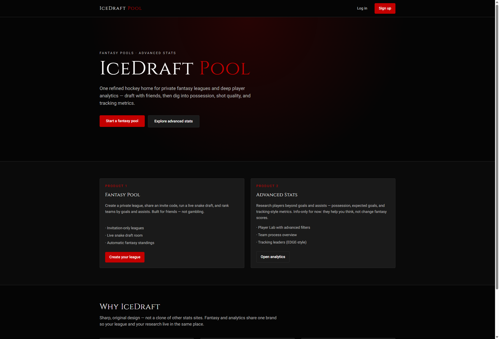
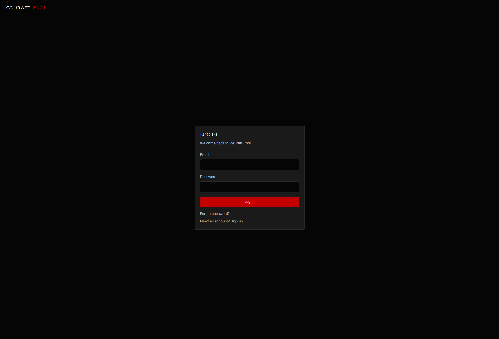
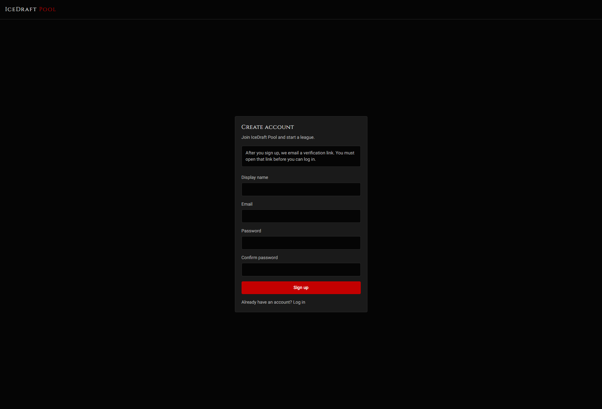
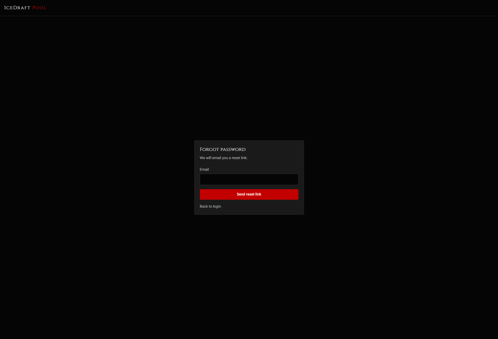

Problem
Friends running a hockey pool should not need ESPN clutter, a gambling site, or a spreadsheet. They need a closed league, a live draft that feels like being in the room, and standings that update themselves.
Existing tools either treat the pool as a side feature or bury research in a different product. IceDraft keeps the fantasy game simple — goals and assists — and puts deeper analytics next to it as research, not as the scoreboard.
Role
I owned the product end to end: brief, visual system, interface, and the shipped web app. I designed the flows (invite → draft → standings → commissioner), wrote the UI in the same black-and-crimson language as gianniperugini.com, and built the stack so draft picks cannot collide and private leagues stay private.
Process
- Define the product Invitation-only leagues. Live snake draft. Automatic standings. Analytics stay informational so the pool does not turn into a gambling product.
- Design the system No prior Figma file. I designed in the browser from a tight token set — near-black surfaces, crimson actions, Cinzel display, Roboto body — then reconstructed those frames here so the system is visible.
- Build the integrity layer Auth, invite codes, and the draft room sit on Supabase. The pick itself is a database function, not a browser guess, so two managers cannot take the same player.
- Ship, then add research The fantasy loop shipped first. Player Lab and team process views came second, still inside the same brand, still behind an account so league data stays closed.
UI system
Reconstructed from the live product into a Figma file: Cover, Tokens, and screen frames. Colors and type below match that file.
Type: Cinzel (display) · Roboto (UI) · 8px radius on actions · crimson hover glow on cards.
Screens
Public surfaces captured from the live app. Draft, standings, and commissioner tools stay behind invite-only login — that is the product, not a missing screenshot.




Tech stack
- Next.js (App Router)
- TypeScript
- React
- Tailwind CSS
- Supabase Auth + PostgreSQL + Realtime
- Zod
- Vercel
- Public NHL stats API
Live product
The working app is last on purpose. Read the work first, then open the site.
Open IceDraft Pool